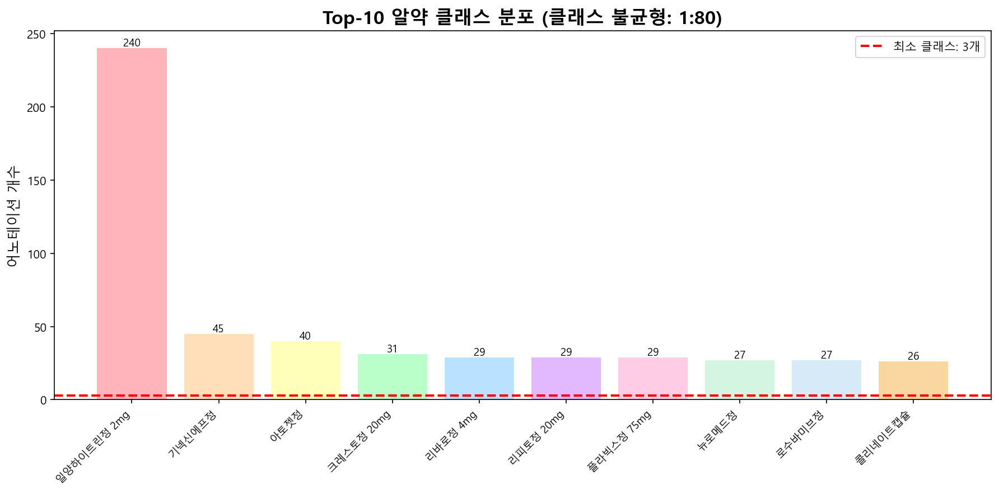
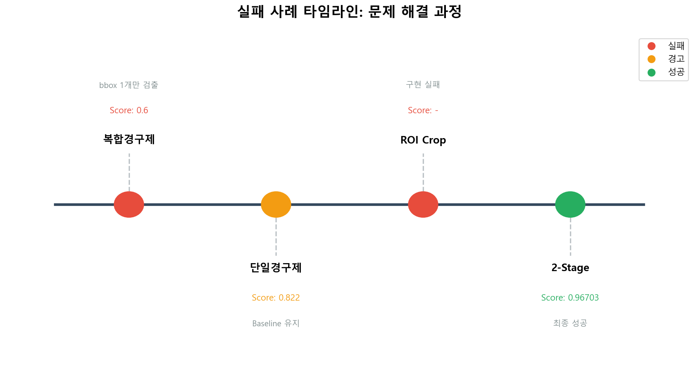
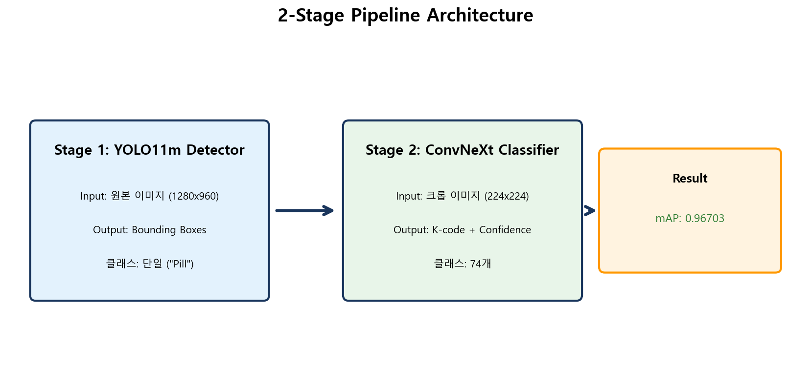

Health Eat
AI 알약 인식 프로젝트
"AI로 찾는 내 손안의 약국"
Codeit 8팀 | 2025.12.04 ~ 12.23
이진석(L), 김민우, 김나연, 김보윤, 황유민
목 차
- 프로젝트 개요
- 데이터 분석 (EDA)
- 시행착오의 여정 (Trials)
- 핵심 전환점: 2-Stage Pipeline
- 최종 모델 아키텍처
- 실험 결과 및 베스트 모델
- 비즈니스 방향성
- 결론 및 회고
프로젝트 개요
목표
Kaggle mAP@[0.75:0.95]
점수 최대화
최종 점수
Baseline (0.82) 대비 +18% 개선
기간
3주 (12/04 ~ 12/23)
점수 개선 추이
0.82 → 0.967
팀 소개 (Codeit 8팀)
5가지 전문 역할로 프로젝트 수행
팀원 역할 정의
Leader / Integration
이진석
- 프로젝트 총괄 조율
- 2-Stage 파이프라인 설계
- Kaggle 제출 및 코드 통합
Data Engineer
김민우, 김나연
- EDA 및 데이터 전처리
- 비즈니스 타당성 분석
- 시장 조사 및 약물 DB 구축
Model Architect
김보윤
- Ubuntu 자동화 파이프라인
- Cloud 아키텍처 설계
- On-Device 배포 연구
Experimentation Lead
황유민
- W&B 실험 추적 시스템 구축
- 증강 실험 전략(4축) 설계 및 분석
데이터 분석 (EDA)
데이터를 이해하는 것이 성능 향상의 첫걸음입니다.
데이터 구성
데이터 구성 (Data)
- Train 이미지: 651장 → 232장 (필터링 후)
- 어노테이션: 1,001개 → 763개
- 클래스 확장: 56개 → 74개
*폴더에는 있지만 JSON에 없는 이미지 다수 발견 (정합성 문제 해결)
클래스 불균형
최다빈도: 240개 vs 최소빈도: 3개 (1:80 비율)
인프라 & 자동화
효율적인 실험을 위한 파이프라인 구축
Ubuntu 자동화 파이프라인
# exc.sh -> run.sh (단일 명령어로 실행)
1. 패키지 설치 (gdown, albumentations 등)
2. 데이터 로드 (Kaggle API, GDrive 연동)
3. YOLO 포맷 변환
4. 모델 학습 시작
W&B 실험 추적 시스템
- 팀 워크스페이스: 실시간 실험 결과 공유 (Codeit Team 8)
- 메트릭 추적: mAP@0.75:0.95, Loss 실시간 모니터링
- 실험 ID 표준화: exp_001, exp_002... 체계적 버전 관리
- Custom Callback: 학습 중 추론 이미지 자동 업로드
실험 전략: 계획 vs 현실
이상적인 계획(Data->HP->Model) vs 현실적인 제약
Plan (계획)
- Data: Input Size, Color, Aug 등 4축 실험 분업
- HP: yolo.tune 활용한 자동 최적화
- Model: n/s/m 및 v8/v11/v12 버전별 검증
Reality (현실)
- Data: 과도한 Aug는 성능 저하 → 기본 Aug 집중
- HP: GPU 자원 한계로 135 epoch 이상 불가
- Model: 데이터 정제 전 선행 파악으로 전략 수정
핵심 실험 인사이트
- 현실적 타협: 모든 변수 실험보다 "데이터셋 품질"이 우선
- 역할 분담: 실험 분산보다 "모델 2명 + 데이터 3명" 구조 효율적
- W&B의 역할: 혼선 방지엔 탁월, 즉각적 성능 향상엔 한계
- HP 전략: 앵커 모델 고정 후 Fine-tuning이 효율적
시행착오의 여정
"실패는 성공의 어머니"
주요 실패 사례
-
Phase 2: AIHub 복합경구제 (실패)
mAP 0.014 - 이미지당 bbox 1개만 학습되는 치명적 문제 -
Phase 3: AIHub 단일경구제 (미미)
0.822 (+0.002) - 배경/조명 도메인 불일치 -
Phase 4: ROI Crop (오류)
크롭 이미지 전체를 BBox로 설정했더니 탐지 실패
실패 사례 타임라인
핵심 전환점
2-Stage Pipeline
End-to-End vs 2-Stage
End-to-End (기존)
이미지 → YOLO → 74개 클래스 직접 예측
클래스 불균형, 데이터 부족으로 한계
2-Stage (신규)
1. Detector (YOLO) → "알약" 위치 검출
2. Classifier (ConvNeXt) → 무슨 알약인가?
각 Task 독립적 최적화 가능!
전체 아키텍처
Detector 성능

mAP50: 0.995 | Recall: 0.99 (거의 모든 알약 검출)
베스트 모델 분석
핵심 요인: 데이터셋 정제
양보다 질 (Quality > Quantity)
- 테스트 데이터와
유사한 3~4개 bbox
이미지만 선별 - ~10,000장 중
~7,000장 고품질
데이터만 사용 - 결과:
+0.044
점수 향상
비즈니스 방향성 & 전략
B2C를 넘어 B2B SaaS로
팀 비즈니스 전략 회의 (12/18)
서비스 타당성 (김민우)
- 타겟: 고령자 (다약제 복용군)
- 한계: B2C 직접 소구 어려움
- 결론: B2B (요양원, 재가요양) 병행
시장 조사 (김나연)
- 약국: 전문가 보조 도구
- 구조대/수사: 비전문가 신속 식별
- Insight: 응급/수사기관 수요 높음
약물 정보 챗봇 구축 (황유민)
"객체 인식 결과를 유용한 정보로 변환"
- 기능: 알약 인식 결과(K-code) 수신 후 정보 제공
- 제공 정보: 효능, 복용 주의사항, 약물 상호작용
- 가치: 단순 식별을 넘어선 '헬스케어 비서' 역할
모바일 배포 연구 (Research)
On-Device vs Cloud 타당성 검토 (김보윤)
- 시도: YOLO11 .pt → .pte (ExecuTorch) 변환
- 성과: Android 앱 내 모델 구동 성공
- 한계: 2-Stage 파이프라인의 모바일 구현 복잡성
- 결정: 앱 용량(100MB vs 20MB) 및 유지보수 고려 Cloud 전환


협업 통계 (Collaboration)
180+
Commits
86
PRs
40
Daily Logs
12
Exp Logs
결론 및 회고
- 성과: Baseline 0.82 → 0.967 (18% 개선)
- 핵심 성공 요인: 2-Stage Pipeline 도입 + 데이터 정제
- 교훈: 데이터의 양보다 품질과 구조 이해가 중요함
감사합니다
GitHub: Jin94-ai/codeit_team8_project1